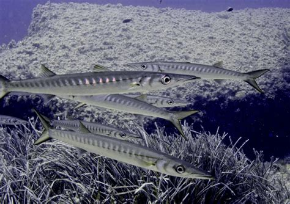

Sphyraena sphyraena (Λούτσος)

Μορφολογία
Το σώμα του είναι μακρύ, κυλινδρικό και έντονα υδροδυναμικό, με μυτερό ρύγχος, μεγάλο στόμα γεμάτο κοφτερά δόντια και δύο ραχιαία πτερύγια χωριστά μεταξύ τους. Τα ενήλικα φτάνουν συνήθως 30–70 cm αλλά μπορεί να ξεπεράσουν το 1 m, με ασημί σώμα και πιο σκούρα ράχη, προσαρμοσμένα για γρήγορες επιθέσεις στην ανοιχτή στήλη νερού.
Πού το συναντάμε
Ο Sphyraena sphyraena απαντάται σε Ανατολικό Ατλαντικό, Μεσόγειο και Μαύρη Θάλασσα, όπου ζει τόσο σε παράκτια όσο και σε πιο ανοικτά νερά. Συνήθως κινείται από την επιφάνεια μέχρι περίπου 50–100 m βάθος, σε θερμοκρασίες γύρω στους 14–22 °C, συχνά σε κοπάδια κοντά σε ακτές, λιμάνια και υφάλους.
Διατροφή
Ο λούτσος είναι σαρκοφάγο είδος που τρέφεται κυρίως με άλλα ψάρια, ενώ δευτερευόντως καταναλώνει κεφαλόποδα και καρκινοειδή. Συνήθως κυνηγά σε κοπάδια, κάνοντας γρήγορες, συντονισμένες επιθέσεις σε κοπαδιάρικα μικρά ψάρια στη μέση ή την ανώτερη στήλη
Συνθήκες εκτροφής
Για θαλάσσιους λούτσους/barracudas δεν υπάρχει ανεπτυγμένη εμπορική ιχθυοκαλλιέργεια, όμως γενικές αρχές από άλλα είδη barracuda δείχνουν ότι χρειάζονται μεγάλες, καλά οξυγονωμένες δεξαμενές με συνεχή ροή νερού και πολύ χώρο κολύμβησης, επειδή είναι ταχύτατα, πελαγικά ψάρια. Πειραματικές εκτροφές συγγενικών ειδών έδειξαν ότι τα νεαρά στάδια απαιτούν υψηλής ποιότητας ζωντανή τροφή (π.χ. ζωοπλαγκτόν, Artemia) και σταθερές περιβαλλοντικές συνθήκες, ενώ τα ενήλικα είναι ευαίσθητα στο στρες και στους τραυματισμούς κατά το χειρισμό.